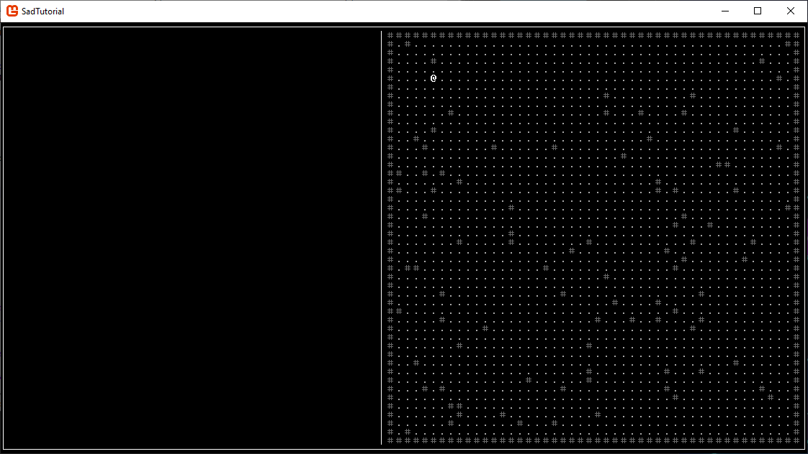

We'll be covering creating some simple structures for actors (things that can move) and maps (places to move) in this chapter. By the end of the chapters you should have a simple map with walls randomly placed in it. In an effort to make this less of a copy and paste guide, I'll be trying to give you the code less unless it's hard to describe. If you have issues understanding what I'm going for, all the code blocks will be at the end of the chapter.
Create a folder in your projects root directory called Data. All the following structures will go into this. Next, create a file in it called Renderable.cs with three variables: a string for the name of the entity, an int for the glyph used to draw them, and a SadRogue.Primitives.Color for their foreground color. Create a constructor to set all of these, and then add a function to the file named GetAppearance that returns a ColoredString. Use a ColoredString constructor with our Glyph as the string and our Foreground as the Color, with the background Color set to Black. Helpful tip: SadAdditions has an extension for ints (int.AsString()) that converts the int to a char, then casts that to a string to get the glyph at the specified index instead of as a number.
Next up create two more files, both inheriting from Renderable, called Tile.cs and Entity.cs. Add a string variable for their name to both, and add ints to store X and Y coordinates to Entity. Tile should also get two bools, one for whether or not it blocks movement, and another for whether it blocks vision. Create new constructors for both classes to incorporate the new variables while sending the color and glyph up the chain to Renderable's constructor. Now we go one layer deeper, and make a file called Actor.cs that inherits from Entity. No new data is required for Actors just yet, so just create a constructor identical to the Entity constructor. We'll finish this section by going yet another layer deeper, creating a file called Player.cs that inherits from Actor. The constructor for Player can be simplified to only needing a name, x, and y, as the player can always use a white @ as their appearance. Feel free to change the color or symbol if you like.
Now for something a little different, create a file called Map.cs and add three variables to it: a Tile array, an int to store the Width of the map, and an int to store the Height of the map. For the constructor only accept the width and height. Initialize the Tile array to the size of width x height, then use two nested for-loops to fill it. Tiles around the edge of the map should be set to Walls, while the center tiles should be set to Floors. Take a brief detour to GameSettings.cs and add a System.Random variable, which we'll be using extensively throughout the rest of the project. Back in Map.cs add a second for-loop after the first and set it to run 100 times, changing a random Tile from the array to a Wall each time.
The final structure we need before moving on will be a new file called World.cs. For now all it needs to hold is Map and a Player. The constructor doesn't need anything passed in, just place the Player at 5,5 and instantiate the Map with size 48, 48. Go to GameSettings again and add a line to create a static World, as it'll be very useful for us to be able to access that from any files later.
Head over to UI_GameArea and remove everything after the .Clear() statements from Update(). Draw a line on Con from 74,0 to 74,48 with glyph 179. This should create a straight line in the middle of the screen. After that create a nested for-loop to iterate through all positions in GameSettings.World.CurrentMap.Tiles and print them on SquareCon (using the GetAppearance function we created). If you used map size 48,48, then printing with an X-offset of 44 (and Y of 0) should draw the map perfectly filling the right half of our screen. After that loop create a simple Print statement to draw the Player with the same offset. If everything went according to plan, you should see approximately the same thing as shown in the following image.
In the formerly empty Input function in UI_GameArea, place code that checks for WASD being pressed (Shorthands.KeyPressed is one way to do this, if using SadAdditions). Manipulate GameSettings.World.Player.X and GameSettings.World.Player.Y as needed. Now you should be able to move the player icon around. But wait, it isn't checking to see if the tiles are actually walkable! Add two ints before the KeyPressed checks, dx and dy. Instead of moving the player when pressing a key, set the dx or dy to the position they would move to (so for up, set dy to -1). After the KeyPressed calls, check to see if either of dx or dy aren't zero, then create a Tile? using the TileAt function we created in Map on the players position modified by dx and dy. If this tile isn't null and doesn't block movement, finally modify the Player position by dx and dy. Now you should be able to walk around the map properly impeded by walls!.
If you've followed all the steps, and I didn't forget anything, then you should now have a simple map cluttered with random walls that you can navigate in using a Player object. Still a long way to go, but our game is starting to look more like a game! If you had any trouble following the instructions, all of the modified files are provided below for convenience.
Chapter 01: Some Foundational Work
Chapter 03: TBD
Back to Index